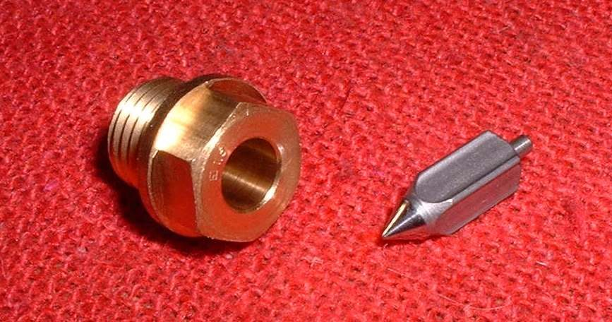
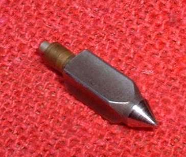
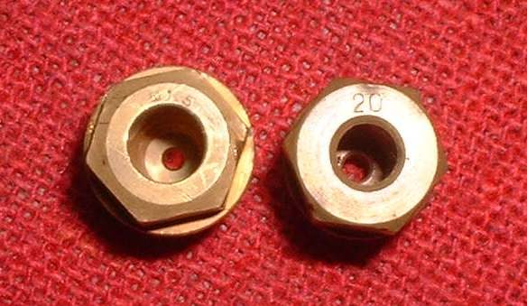
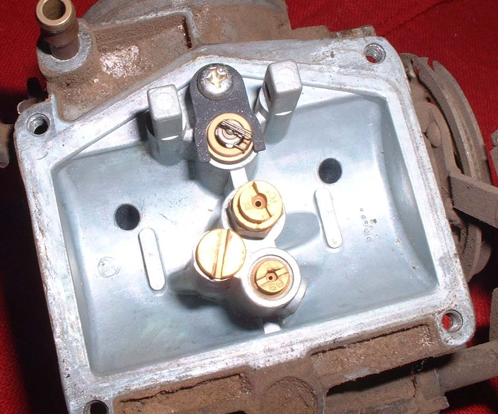
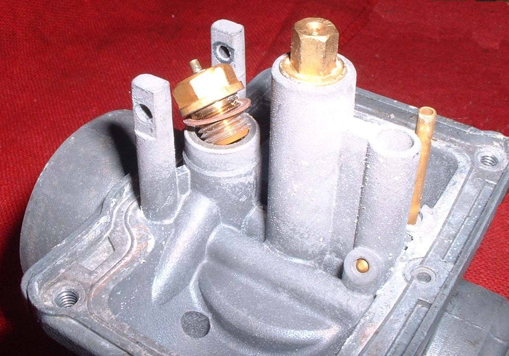
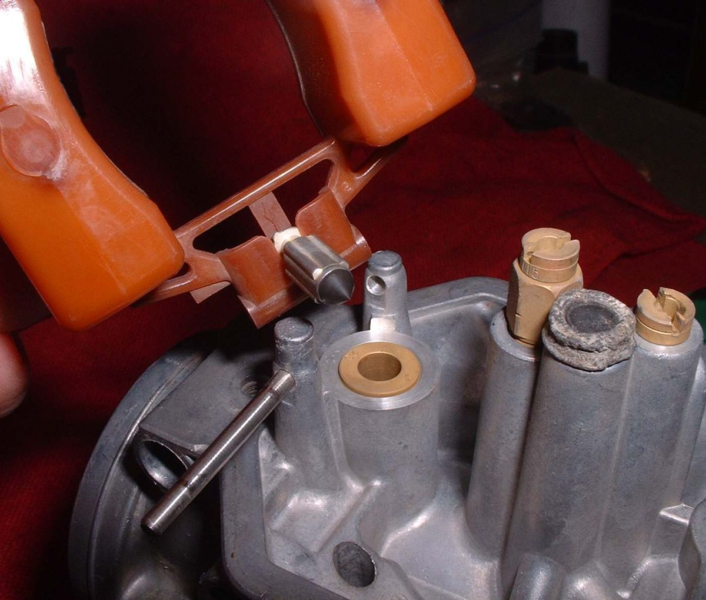
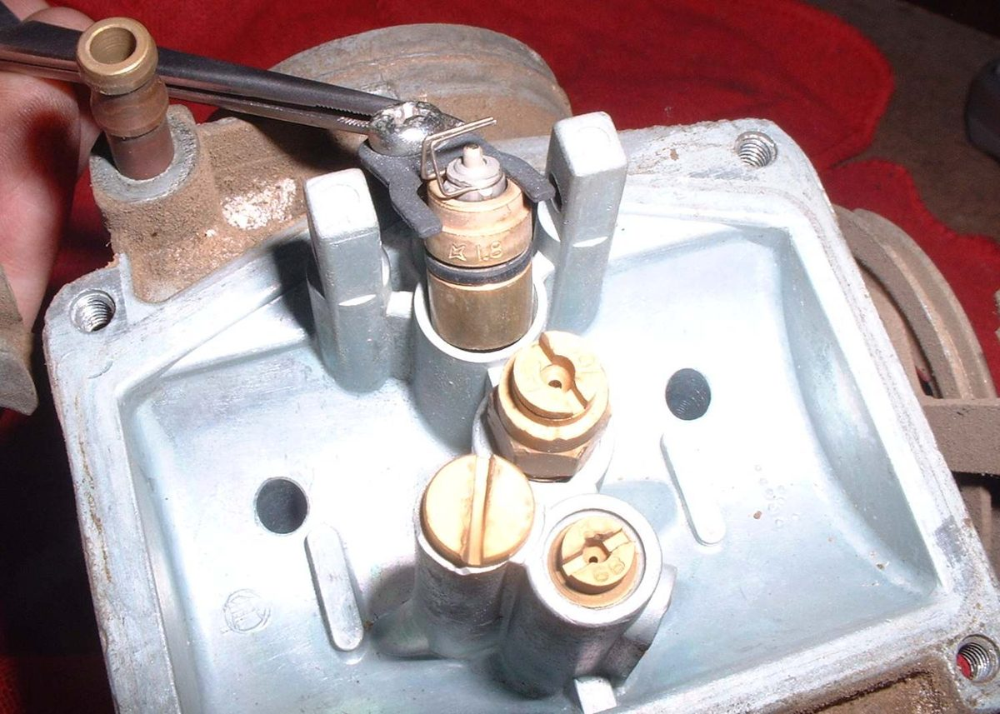

The needle valve and its seat let fuel into the float bowl and shut it off when the float rises. If the needle does not seal, fuel keeps flowing and the carburettor floods. This job checks the pair and replaces it when it is worn. A dirty-tank speck on the seat is the most common cause, and it often clears without parts.
Safety
- Fuel burns. Work outdoors or in good air, with no flame, spark or hot exhaust near.
- Turn the fuel tap off and catch the fuel from the float bowl in a container.
- Let the engine cool before starting.
You need
- Screwdrivers and a small spanner or socket.
- A new needle and seat as a matched set. Take the old set to the shop, or give the bike's make, model and year. Seats come in different flow sizes and needles have a steel or rubber tip, so a look-alike may not fit or flow the same.
- A new float bowl gasket, a clean tray and a clean cloth.
Steps
- Turn the fuel tap off. Remove the float bowl and pour out any fuel.
- Lift out the float and its pin. Take the needle off the float tab or clip.
- Look at the needle tip. A visible ring or groove worn around the tip means it can no longer seal. Replace the needle.
- Look at the seat opening for dirt, rust grit or a rough edge. A speck of rust from a dirty tank can hold the needle off its seat and make the carburettor overflow.
- If the cause is only dirt, tap the carburettor sharply with a plastic hammer or the plastic handle of a screwdriver. This can free the speck. If it still leaks after tapping, fit a new needle and seat.
- Note how the seat is held: screwed in, pressed in, or held by a clip and screw. Remove it the same way. A pressed-in seat usually comes out with a gentle pull on the old part or a small hook. Do not scratch the bore.
- Fit the new seat, then the new needle, with the same orientation as the old one. A screwed-in seat is snug, not forced.
- Refit the float, check the float level using Check the carburettor float and needle valve, fit the bowl with a new gasket and turn the tap on.
Check your work
- No fuel drips from the overflow pipe or bowl with the tap on and the engine off.
- Fuel does not run out of the carburettor throat after the bike stands.
- The engine starts and idles without a fuel smell.
If it did not fix the problem
- Fuel still pours out: Fuel pours out of the carburettor overflow pipe.
- Dirt keeps coming back: Rust or flakes inside the fuel tank and Replace the fuel filter.
- Engine smells of fuel and smokes: Engine runs rich.